whimsies
collection of 1/1/505 by ENICOLL
Whimsies is an exploration of the fusion between nature and human emotion by Canadian multidisciplinary artist Emily Nicoll, also known as ENICOLL. This theme comes to life through a collection of 505 unique artworks, created using artificial intelligence technologies. As Nicoll's first long-form project, Whimsies extends the visual language she has been refining over the years, both in her work as ENICOLL and through her record label, Aquaregia.
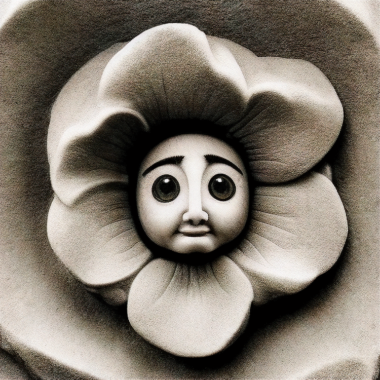
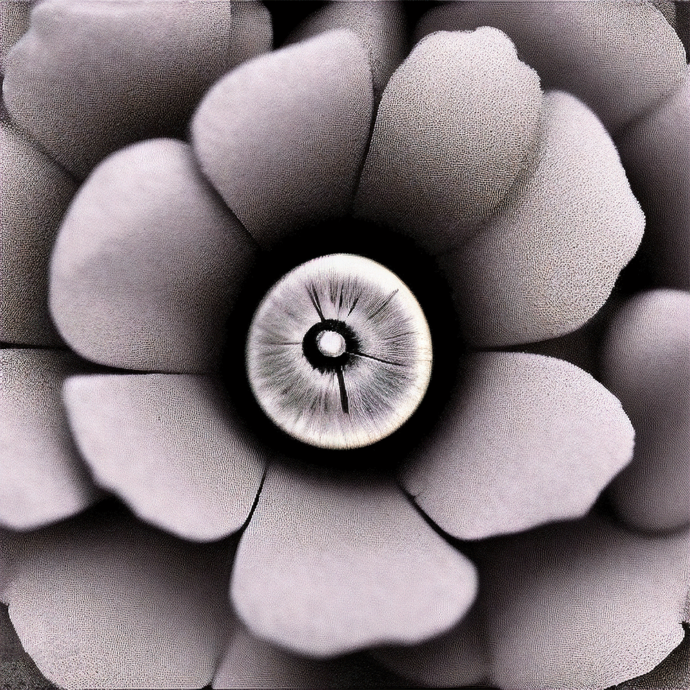
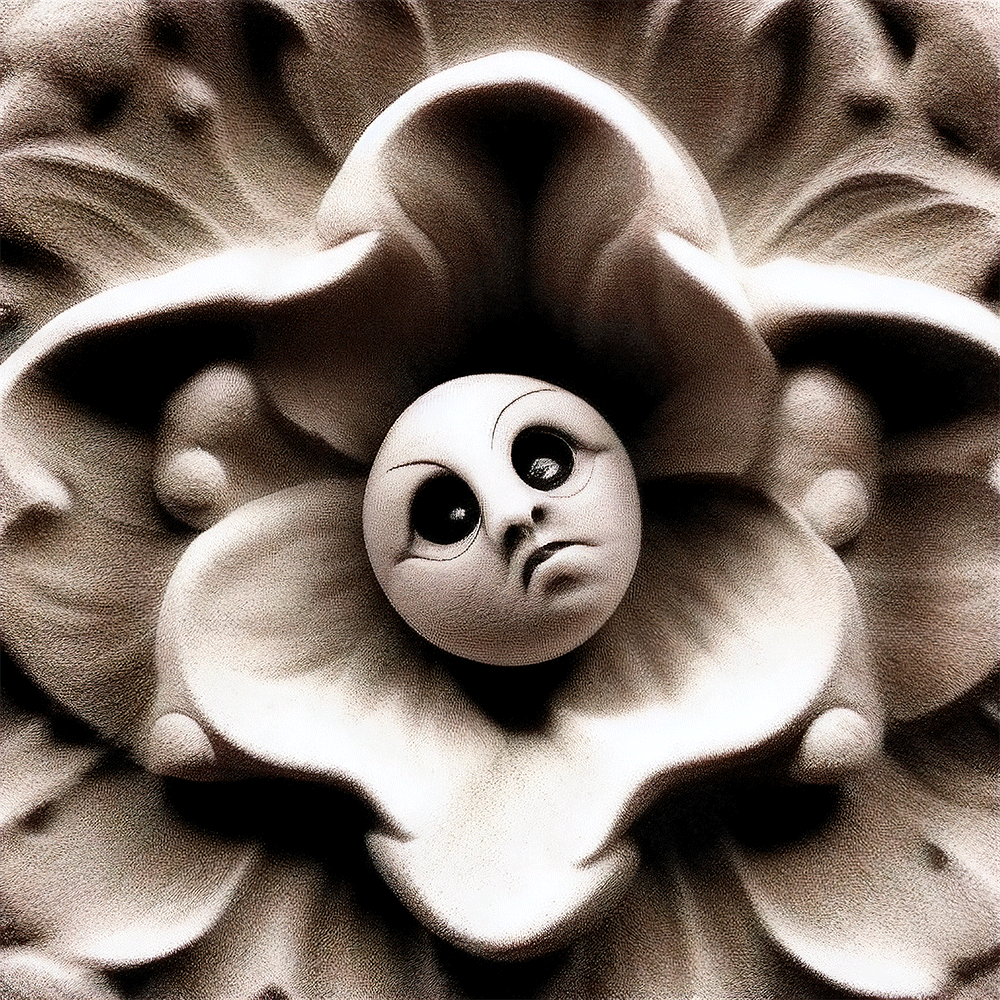
Inspiration and Inception
The journey toward creating Whimsies began in early 2023, when I first started exploring the potential of AI tools like Stable Diffusion. My foray into the world of AI was first publicized through an artwork I had created for Aquaregia, my record label. The first work using AI that I completed, which then went on to become the cover art for 747's Veiltail/Stairway EP, was created by layering multiple artworks I had produced in Stable Diffusion, a natural progression to my already established workflow for Aquaregia.
In both my work as ENICOLL and for Aquaregia, I've become known for a style that often centers on floral themes and aesthetics. A recurring visual approach in my pieces is a top-down view of the subject, with minimal to no background imagery — allowing the viewer to fully immerse in the focused, central figure. Repetition, layers, sacred geometry, and subtle psychedelic themes weave through much of my portfolio.
My earliest album covers in 2015 began from photographs I had taken, and then processed digitally to create the iconic style that has become known as Aquaregia. A natural evolution to this began in 2020, where I had already been creating and minting works made with 3D software. Instead of solely relying on photos for my cover art, I started modeling subjects in Blender, and "photographing" those subjects within the program. I could then plug these unreal objects in my already established Aquaregia practice as the subjects. The final evolution was to attempt to integrate AI works into the covers.
The sonic sensibility of 747's Veiltail/Stairway EP leans towards trance of the nineties. The bold and psychedelic covers from this era served heavily as inspiration for the cover. I also tried to mirror the theme I had captured in the artwork for 747's hit record, Aurora Centralis EP. Using Stable Diffusion to generate a variety of images, I then settled on fusing a character/idol I had created with multiple flowers I had generated, creating a layered and messy psychedelic being. Capturing emotion in the faces of the idols was something I tried tirelessly to do, and eventually achieved. The juxtaposition of using a machine to create something emotive was something I became obsessed with, which is what inevitably led me to create Whimsies, a deeper exploration into this topic. Combining emotive faces with a floral element became my motive. After meticulously generating thousands of images, I have curated what I consider the most powerful outputs into this collection with minimal post-processing.
 747 - Aurora Centralis EP — Digital Cover (released June 2017)
747 - Aurora Centralis EP — Digital Cover (released June 2017)
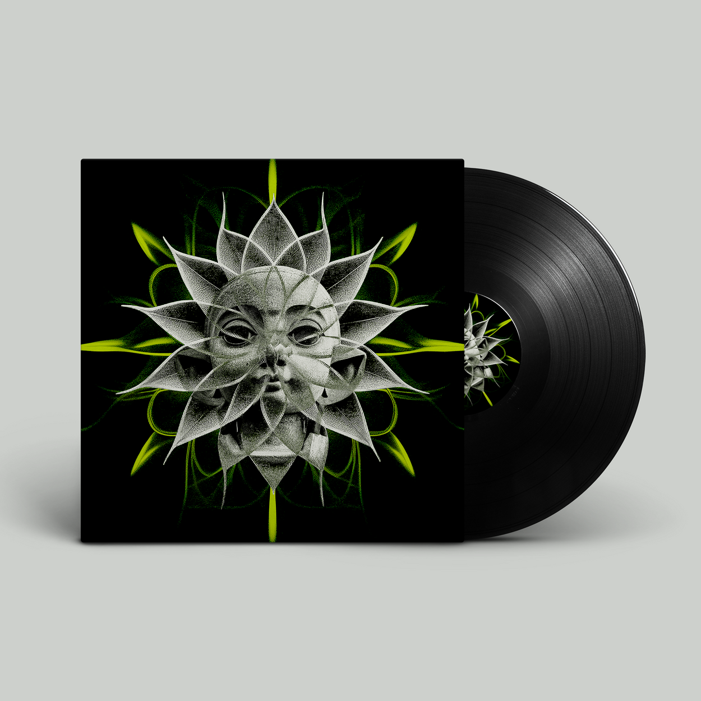
747 - Veiltail/Stairway EP — 12" Vinyl Mockup (released March 2024)Traits
As a collector of long-form tokenized digital art myself, I approached the Whimsies project with careful consideration of rarity, trait distribution, and the collector experience. Each creature possesses its own set of unique traits, ranging from the subtle to the overt. These traits are not just a technicality — they represent different emotional and aesthetic qualities present in each individual artwork.
For me, collecting art is about forming a relationship with each piece, and I wanted to ensure that those who collect Whimsies experience the same connection. Every artwork is designed to stand alone, while also contributing to the larger narrative of the project as a whole.
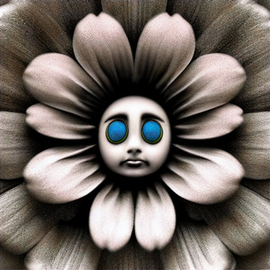
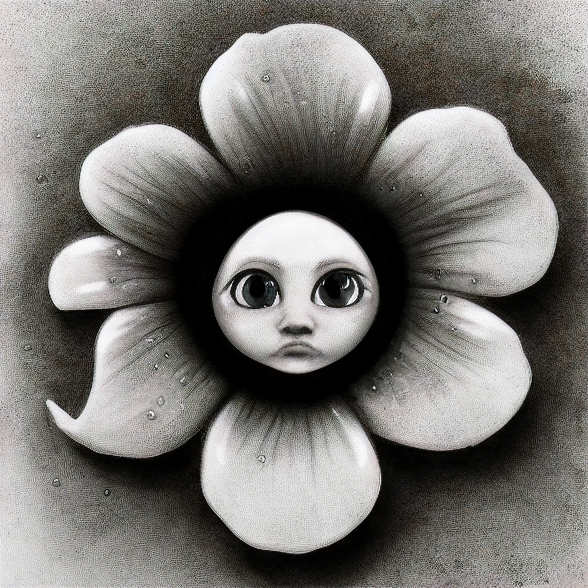
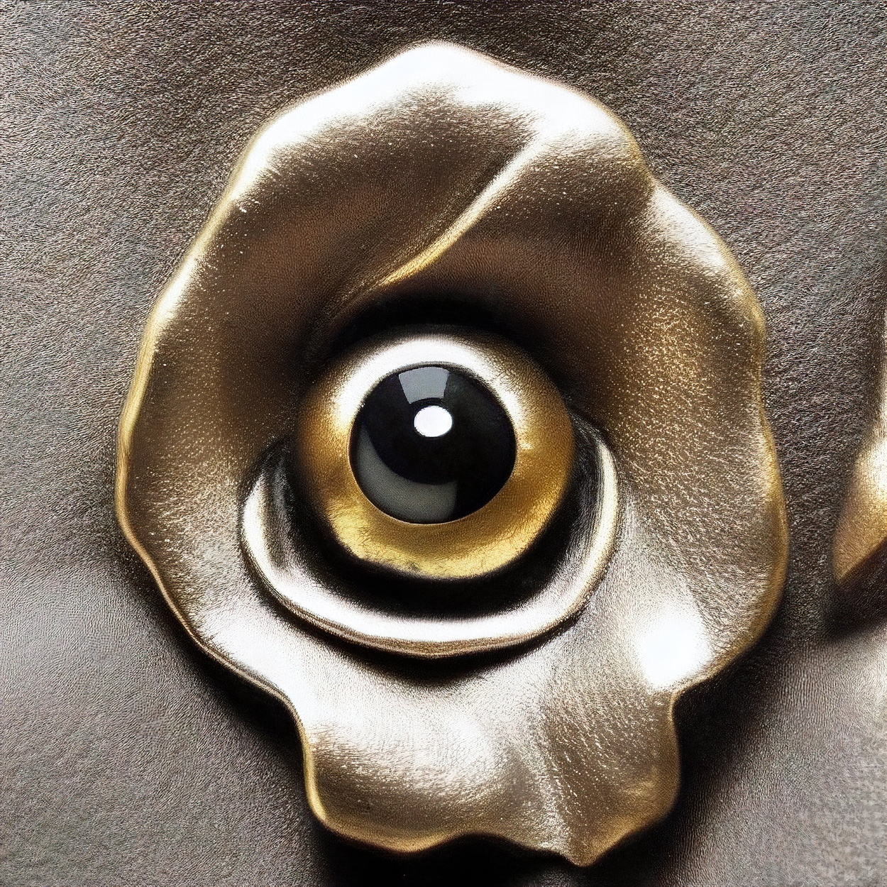
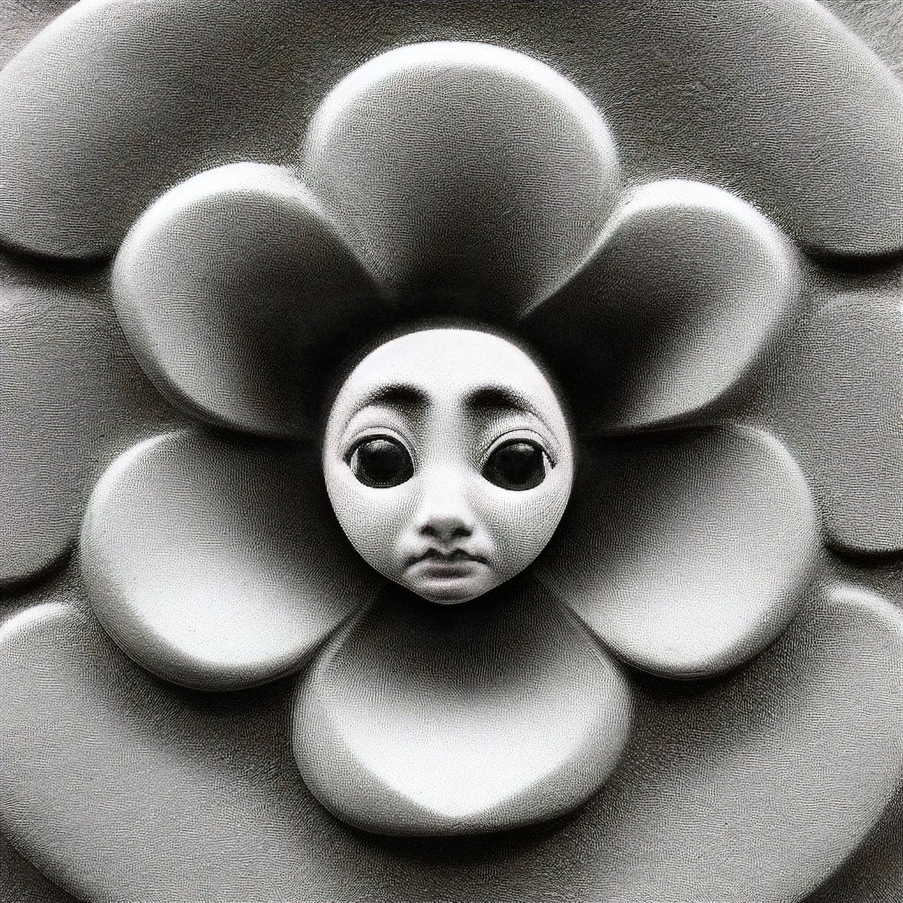
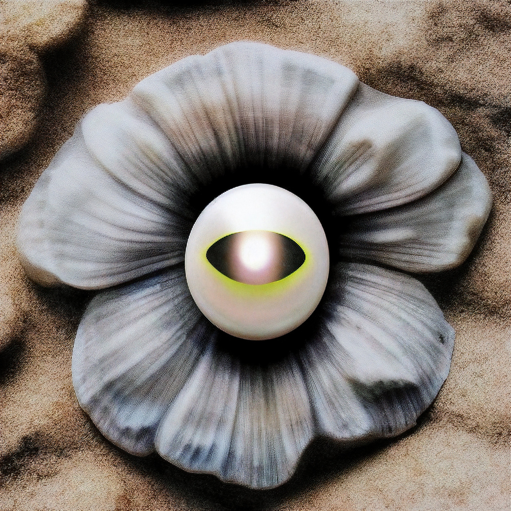
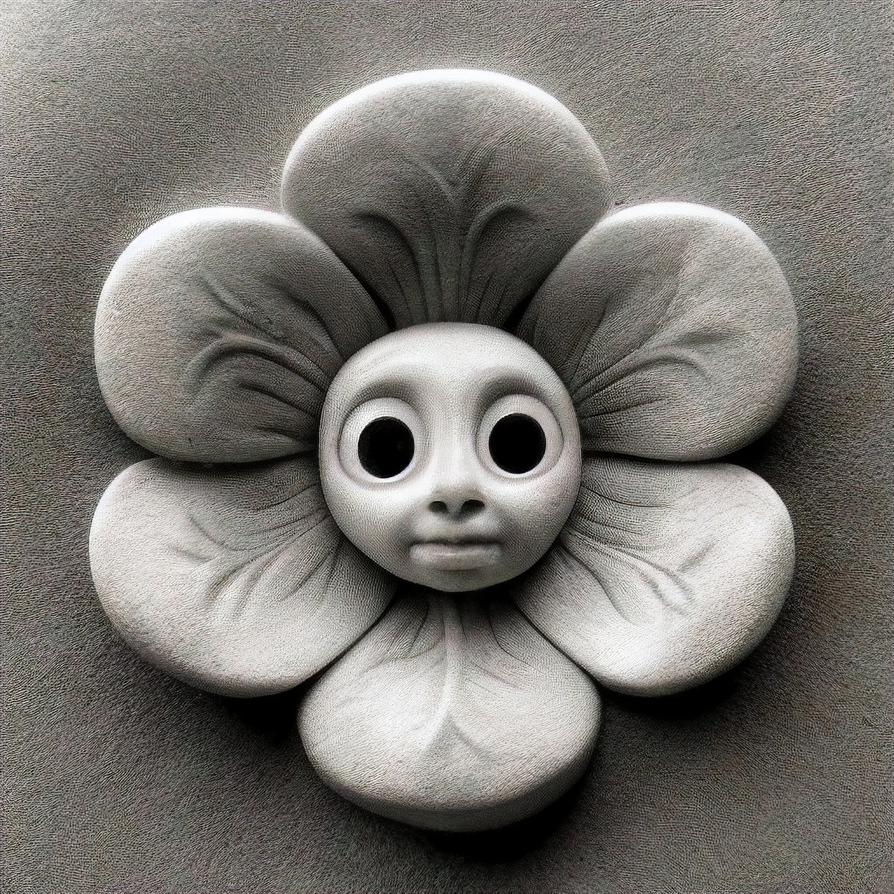
There are five main traits, plus an additional category to designate special outputs. The five core traits and their possibilities are:
1. Species — Ocular, Hominine, Mythic
2. Petal Count — Hexa, Plus, Minus, Amorphous
3. Palette — Monotone, Gold, Tinged, Acid
4. Material — Stone, Paper, Charcoal, Fibre
5. Realm — Flora, Pices, Insecta, Mammalia
The special outputs include a combination of unique outputs I felt should be honoured individually and homages to artists and musicians who have inspired me. The Source Experience is dedicated to Robert Leiner whose 1994 track "Aqua Viva" is one of my all time favourites and for which the cover art influenced this series in the ocular category.
1. Species — Ocular, Hominine, Mythic
2. Petal Count — Hexa, Plus, Minus, Amorphous
3. Palette — Monotone, Gold, Tinged, Acid
4. Material — Stone, Paper, Charcoal, Fibre
5. Realm — Flora, Pices, Insecta, Mammalia
The special outputs include a combination of unique outputs I felt should be honoured individually and homages to artists and musicians who have inspired me. The Source Experience is dedicated to Robert Leiner whose 1994 track "Aqua Viva" is one of my all time favourites and for which the cover art influenced this series in the ocular category.
Lettuce and Cabbage are nods to two of my favourite artists in the AI universe — Helena Sarin and Nice Aunties — respectively referencing Sarin's 'AI Horticulture Vignettes from the Greenhouse of the Future' collection, and to a specific output from my collection of 'Auntieverse by Niceaunties', Chapter No. 5, Auntiesocial #0482.
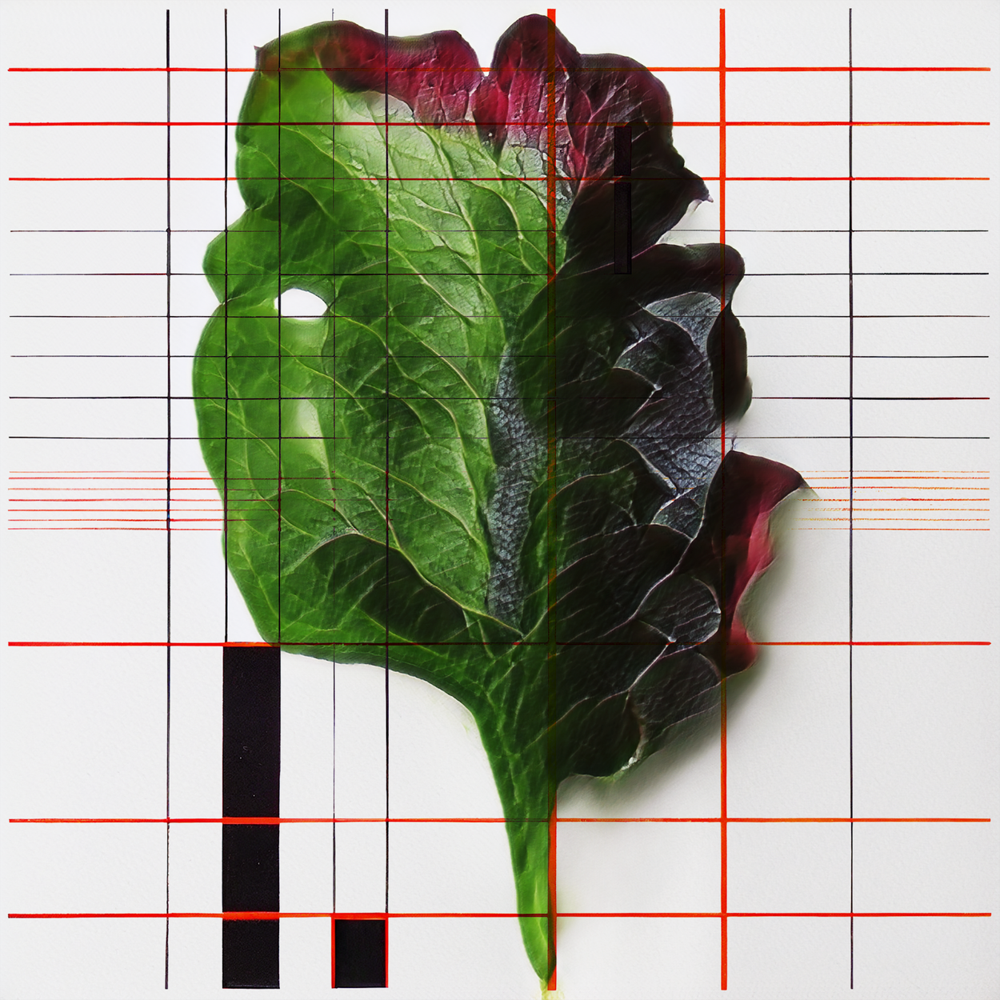
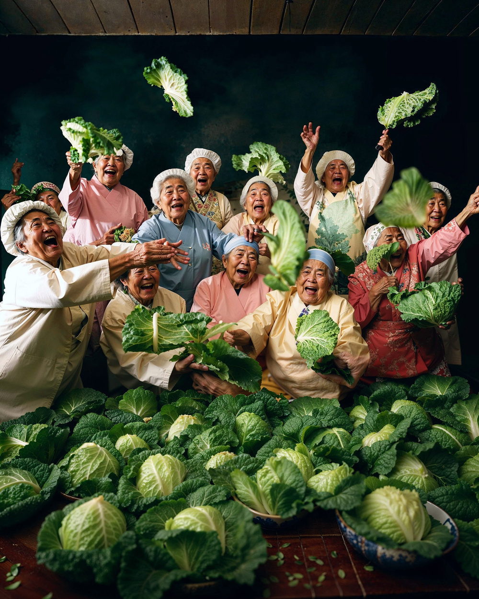
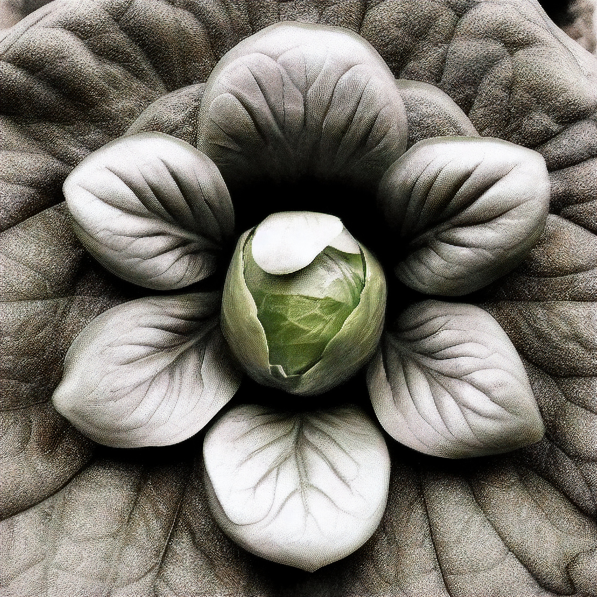
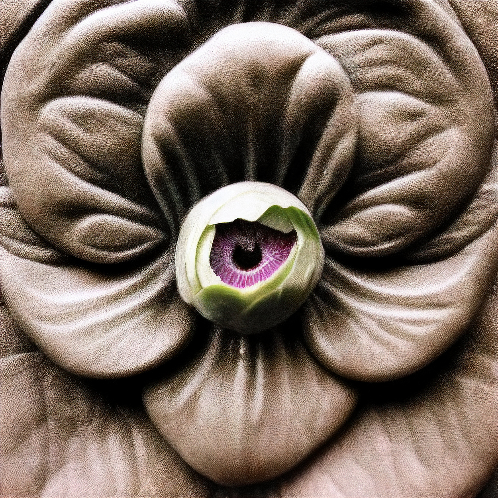
Availability
The works will be available as tokenized digital assets on the Shape blockchain, a layer two built on Ethereum. The collection can be viewed and minted through the Highlight platform linked below. Minting begins October 17th, 2024.
Follow @ENICOLL on Twitter to stay informed.
Highlight ↗
Follow @ENICOLL on Twitter to stay informed.
Recommended Listening